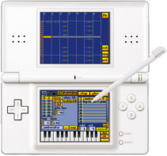

<html>

</html>

<head>

    <title>NitrousTracker - A Fasttracker II style tracker for the Nintendo DS.</title>

    <link rel="STYLESHEET" type="text/css" href="index.css">
</head>

<body>


    <div class="heading">
        <a href="index.html">
            <div class="logobox">
                <div class="logobg"></div>

            </div>
        </a>

    </div>

    <div class="links">

        <table border="0" cellspacing="0" cellpadding="0" height="20px">
            <tbody>
                <tr>

                    <td width="130" align="center" height="19">
                        <a href="index.html">home</a>
                    </td>
                    <td class="hl" width="130" align="center" bgcolor="#888080" height="19">
                        <a href="about.html">about</a>
                    </td>
                    <td width="130" align="center" bgcolor="#888080" height="19">
                        <a href="https://github.com/asiekierka/nitrotracker/releases">download</a>
                    </td>


                </tr>
            </tbody>
        </table>
    </div>


    <div class="content">
        <div class="container">
            <div class="boxtop"></div>

            <div class="opaquetext">
                <div class="boxnoalign">
                    <h2>About NitrousTracker</h2>
                
                
                
                <p>
                NitrousTracker is a FastTracker II style tracker for the Nintendo DS. If you didn't understand that, you might want to read up on <a href="http://web.archive.org/web/20190131025006/http://en.wikipedia.org/wiki/Tracker_(music_software)">trackers</a>. For starters, NitrousTracker is a versatile tool for creating music - everywhere! It supports the popular XM file format that is used by many PC trackers and that can be played on many PC audio players such as Winamp or XMMS.
                </p>
                <p>
                With NitrousTracker, you can carry your XMs around in your DS and compose whenever and wherever you feel like it. <i>"Tracking on a handheld console? Sounds like a pain in the ass."</i> You might say. But because of the touchscreen and stylus of the DS, it's quite easy. You can compose your melodies using an on-screen keyboard, directly edit your patterns by making selections, copying and pasting - all with the stylus. And that's not where it ends: If you don't have any samples at hand, make your own with the DS's microphone. You can even replace the samples in existing songs with your own recorded ones. There are many possibilities already and there will be even more.
                </p>
                
                <h3>Credits</h3>
                <p>There is quite a bunch of people that made the development
                of this project possible or easier. First of all, a huge
                thank you to the NitrousTracker beta testers, for providing tons
                of ideas and helping me find even the most obscure bugs:</p>
                <p>
                alienspurm, andars, atomtwist, Biiaru, chrislody, grobsen,
                Ignatzthemouse, infradead, Jono-60, license, lotlemmwax,
                nitro2k01, nonfinite, parkstenator, reSet, Shagbat,
                silent_code, spielor, totoee, Vengeful Parasite, willgripp
                </p>
                <p>
                NitrousTracker is built on the hard work of a lot of people who work on
                DS homebrew mostly in their spare time. This list is by nomeans
                comprehensive, so please don't sue me if you are missing your name here :-)
                </p>
                <ul>
                <li>joat, dovoto and WinterMute for libnds and DevkitPro
                </li><li>chishm for the universal FAT library
                </li><li>sgstair for the incredible wifi lib
                </li><li>Headspin for the great on-screen typewriter design
                </li><li>doublec for his ds development tutorials that got me started with DS coding
                </li><li>Martin Korth for the incredible gbatek reference and the no$gba emulator
                </li><li>My friends in #dsdev for patiently answering my questions
                </li><li>starpause for providing the samples used in the tutorial
                </li><li>
                </li><li>Michael Krause for the open source SoundTracker,
                    that was a great help with the XM format
                </li><li>Last but not least: Vogue and Mr.H of Triton for
                    Fasttracker II, the tracker that NitrousTracker was
                    designed after
                </li></ul>
                <br><br>
                  </div>
            </div>
            <!-- <div class=""></div> -->

        </div>
        <br>


        <br>
    </div>
    <br>
    <div class="footer">NitrousTracker © 2024</div>


</body>

</html>